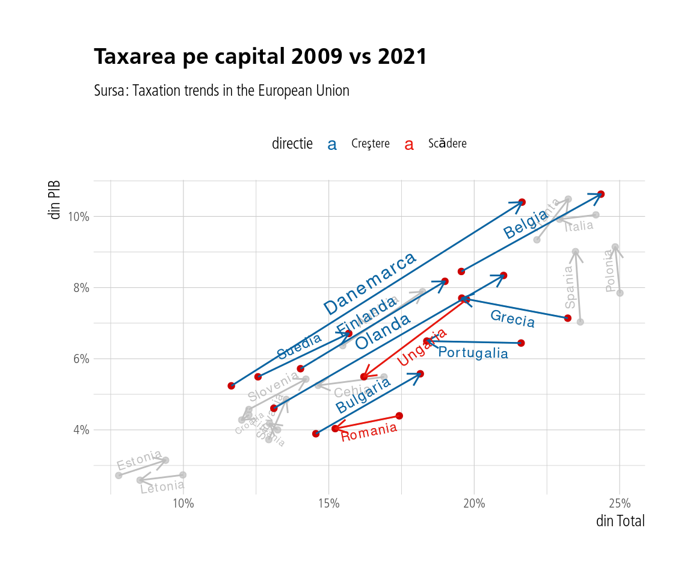

5 Analiza tipurilor de taxe
În acest capitol ne vom ocupa de tipurile de taxe calculate de Comisia Europeană. În speţă este vorba de taxele pe capital, contribuţii, muncă, consum şi proprietate. Datele brute sunt aici.
Vom ilustra situaţia cu toate aceste tipuri de taxe în grafice cu două axe - pe axa x fiind procentul din total taxe iar pe y procentul din PIB colectat. Să începem cu taxarea pe capital.

Taxarea pe contribuţii

Taxarea pe muncă

Taxarea pe consum

Taxele pe proprietate

Şi multidimensional, o hartă a taxării în Europa. Vom folosi ca valori pentru diferitele tipuri de taxări media între 2018-2021 pentru o imagine mai robustă.

Observăm că taxarea pe capital, proprietate şi muncă sunt corelate pozitiv şi invers corelate fiecare în mod negativ cu taxarea pe consum. Contribuţiile sunt relativ puţin corelate cu restul variabilelor. România se află împreună cu statele est-europene şi baltice în zona taxelor care taxează mai degrabă consumul decât celelalte categorii. Mai jos, un tabel cu aceste valori pentru România.
| România - % din PIB pentru diferite taxe | |||||
| capital | contributii | munca | consum | proprietate | |
|---|---|---|---|---|---|
| 2009 | 4.40 | 8.96 | 11.13 | 9.70 | 0.75 |
| 2010 | 4.00 | 8.47 | 10.76 | 11.06 | 0.82 |
| 2011 | 4.41 | 8.65 | 10.62 | 11.94 | 0.78 |
| 2012 | 3.92 | 8.36 | 10.60 | 12.06 | 0.83 |
| 2013 | 4.19 | 8.68 | 11.06 | 12.27 | 0.89 |
| 2014 | 4.80 | 8.52 | 10.76 | 11.96 | 0.89 |
| 2015 | 5.13 | 8.08 | 10.30 | 12.62 | 0.86 |
| 2016 | 5.17 | 8.14 | 10.19 | 10.94 | 0.83 |
| 2017 | 4.32 | 8.51 | 10.78 | 9.99 | 0.72 |
| 2018 | 3.66 | 10.48 | 12.10 | 10.03 | 0.62 |
| 2019 | 3.84 | 10.48 | 11.98 | 10.11 | 0.62 |
| 2020 | 3.30 | 11.02 | 12.83 | 9.94 | 0.59 |
| 2021 | 4.04 | 10.52 | 12.10 | 10.38 | 0.63 |